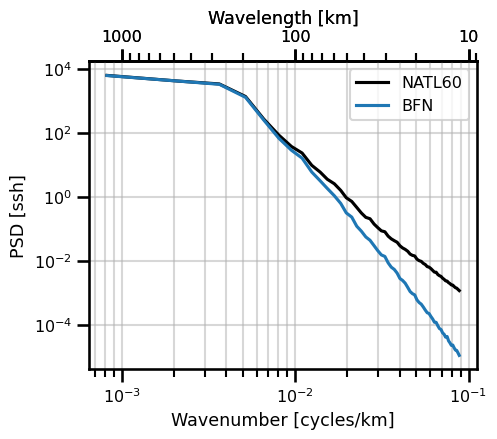
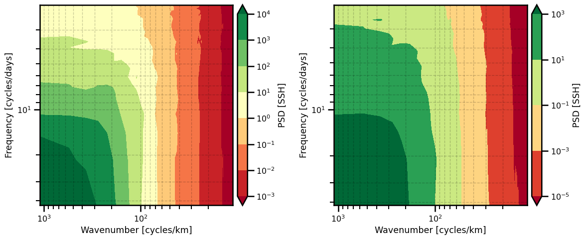
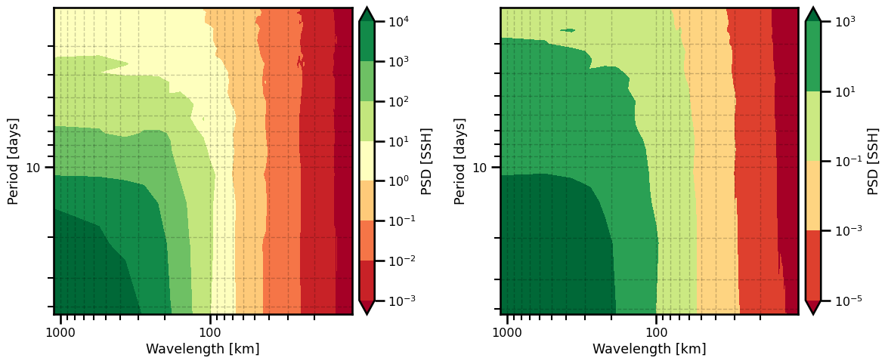
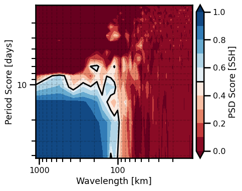

Power Spectrum Score#
In the ocean community, we often operator in the Fourier domain. This is useful for assessing the quality of our models and it can also be useful for learning. In this notebook, we showcase how oceanbench has two fundamental transformations that are useful for both cases: isotropic and spacetime Fourier transformations.
import autoroot
import typing as tp
from dataclasses import dataclass
import numpy as np
import pandas as pd
import xarray as xr
import einops
from metpy.units import units
import pint_xarray
import xarray_dataclasses as xrdataclass
from oceanbench._src.datasets.base import XRDABatcher
from oceanbench._src.geoprocessing.spatial import transform_360_to_180
import matplotlib.pyplot as plt
import matplotlib.colors as colors
import matplotlib.ticker as ticker
import seaborn as sns
sns.reset_defaults()
sns.set_context(context="talk", font_scale=0.7)
%load_ext autoreload
%autoreload 2
!ls /gpfswork/rech/yrf/commun/data_challenges/dc20a_osse/staging/results/4DVarNet
2020a_SSH_mapping_NATL60_4DVarNet_v2022_nadir_GF_GF.nc
2020a_SSH_mapping_NATL60_4DVarNet_v2022_nadirswot_GF_GF.nc
# file = "/gpfswork/rech/yrf/commun/data_challenges/dc20a_osse/staging/results/4DVarNet/2020a_SSH_mapping_NATL60_4DVarNet_v2022_nadirswot_GF_GF.nc"
# file = "/gpfswork/rech/yrf/commun/data_challenges/dc20a_osse/staging/results/MIOST/2020a_SSH_mapping_NATL60_MIOST_swot_en_j1_tpn_g2.nc"
# file = "/gpfswork/rech/yrf/commun/data_challenges/dc20a_osse/staging/results/DUACS/ssh_DUACS_swot_4nadir.nc"
file = "/gpfswork/rech/yrf/commun/data_challenges/dc20a_osse/staging/results/BFNQG/2020a_SSH_mapping_NATL60_BFN_Steady_State_QG1L_swot_en_j1_tpn_g2.nc"
file_ref = "/gpfswork/rech/yrf/commun/data_challenges/dc20a_osse/staging/natl60/NATL60-CJM165_GULFSTREAM_ssh_y2013.1y.nc"
!ls $file
/gpfswork/rech/yrf/commun/data_challenges/dc20a_osse/staging/results/BFNQG/2020a_SSH_mapping_NATL60_BFN_Steady_State_QG1L_swot_en_j1_tpn_g2.nc
# # Domain for analysis: Gulfstream
# time_min = numpy.datetime64('2012-10-22') # domain min time
# time_max = numpy.datetime64('2012-12-03') # domain max time
# lon_min = -64.975 # domain min lon
# lon_max = -55.007 # domain max lon
# lat_min = 33.025 # domain min lat
# lat_max = 42.9917 # domain max lat
def open_ssh_results(file, variable="ssh_mod"):
da = xr.open_dataset(file, decode_times=True)
da = da.sortby("time")
da = da.rename({variable: "ssh"})
da = da.sel(
time=slice("2012-10-22", "2012-12-03"),
lon=slice(-64.975, -55.007),
lat=slice(33.025, 42.9917),
drop=True
)
da = da.resample(time="1D").mean()
return da
def open_ssh_reference(file, variable="gssh"):
da = xr.open_dataset(file, decode_times=False)
da["time"] = pd.to_datetime(da.time)
da = da.sortby("time")
da = da.sel(
time=slice("2012-10-22", "2012-12-03"),
lon=slice(-64.975, -55.007),
lat=slice(33.025, 42.9917),
drop=True
)
# da = da.rename({variable: "ssh"})
return da
def correct_names(da):
da["ssh"].attrs["long_name"] = "Sea Surface Height"
da["ssh"].attrs["standard_name"] = "sea_surface_height"
da["lat"] = da.lat.pint.quantify("degrees_north")
da["lat"].attrs["long_name"] = "Latitude"
da["lat"].attrs["standard_name"] = "latitude"
da["lon"].attrs["long_name"] = "Longitude"
da["lon"].attrs["standard_name"] = "longitude"
da["lon"] = transform_360_to_180(da.lon)
return da
da_ref = open_ssh_reference(file_ref)
da = open_ssh_results(file, "gssh")
da_ref = correct_names(da_ref)
da = correct_names(da)
Regridding#
from oceanbench._src.geoprocessing.gridding import grid_to_regular_grid
da = grid_to_regular_grid(
src_grid_ds=da.pint.dequantify(),
tgt_grid_ds=da_ref.pint.dequantify(), keep_attrs=True
)
da
<xarray.Dataset>
Dimensions: (time: 42, lat: 199, lon: 199)
Coordinates:
* time (time) datetime64[ns] 2012-10-22 2012-10-23 ... 2012-12-02
* lon (lon) float64 -64.95 -64.9 -64.85 -64.8 ... -55.15 -55.1 -55.05
* lat (lat) float64 33.05 33.1 33.15 33.2 33.25 ... 42.8 42.85 42.9 42.95
Data variables:
ssh (time, lat, lon) float64 nan 0.649 0.6539 ... -0.1912 -0.195
Attributes:
regrid_method: bilinearInterpolate NANs#
from oceanbench._src.geoprocessing.interpolate import fillnan_gauss_seidel
da = fillnan_gauss_seidel(da.copy(), "ssh")
da_ref = fillnan_gauss_seidel(da_ref.copy(), "ssh")
Units#
def add_units(da):
da = da.pint.quantify(
{"ssh": "meter",
"lon": "degrees_east",
"lat": "degrees_north",
"time": "nanoseconds"
}
)
return da
da = add_units(da)
da_ref = add_units(da_ref)
Rescaling#
In a previous notebook, we showed how we can do lat/lon
Degrees to Meters#
It is often more useful to have things in meters instead of degrees. The units are more meaningful and easier to interpret. So we can do a simple degree to meters transformation included in the library.
from oceanbench._src.geoprocessing.spatial import latlon_deg2m
from oceanbench._src.geoprocessing.temporal import time_rescale
t0 = "2012-10-22"
freq_dt = 1
freq_unit = "D"
# spatial rescale
da = latlon_deg2m(da, mean=True)
da_ref = latlon_deg2m(da_ref, mean=True)
# temporal rescale
da_ref = time_rescale(da_ref, freq_dt=freq_dt, freq_unit=freq_unit, t0=t0)
da = time_rescale(da, freq_dt=freq_dt, freq_unit=freq_unit, t0=t0)
Spectral Domain#
def rmse_da(da, da_ref, variable, dim):
return ((da[variable] - da_ref[variable]) ** 2).mean(dim=dim) ** 0.5
def nrmse_da(da, da_ref, variable, dim):
rmse = rmse_da(da=da, da_ref=da_ref, variable=variable, dim=dim)
std = (da_ref[variable]**2).mean(dim=dim) ** 0.5
try:
return 1.0 - (rmse / std)
except:
return 1.0 - (rmse / std)
print(rmse_da(da=da, da_ref=da_ref, variable="ssh", dim=["lat", "lon", "time"]).values)
0.03774872796061978
print(nrmse_da(da=da, da_ref=da_ref, variable="ssh", dim=["lat", "lon", "time"]).values)
0.93507747475151
print(nrmse_da(da=da, da_ref=da_ref, variable="ssh", dim=["lat", "lon"]).std().values)
0.014601675884082942
Now, we can look at how we can represent the data within the Fourier Domain
Isotropic Assumption#
from oceanbench._src.metrics import power_spectrum as psdcalc
from oceanbench._src.preprocessing.mean import xr_cond_average
da_psd_ref = psdcalc.psd_isotropic(da_ref, "ssh", ["lon", "lat"])
da_psd_ref = xr_cond_average(da_psd_ref, dims=["time"], drop=True)
da_psd = psdcalc.psd_isotropic(da, "ssh", ["lon", "lat"])
da_psd = xr_cond_average(da_psd, dims=["time"], drop=True)
Plots#
class PlotPSDIsotropic:
def init_fig(self, ax=None, figsize=None):
if ax is None:
figsize = (5,4) if figsize is None else figsize
self.fig, self.ax = plt.subplots(figsize=figsize)
else:
self.ax = ax
self.fig = plt.gcf()
def plot_wavenumber(self, da, freq_scale=1.0, units=None, **kwargs):
if units is not None:
xlabel = f"Wavenumber [cycles/{units}]"
else:
xlabel = f"Wavenumber"
self.ax.plot(da.freq_r * freq_scale, da, **kwargs)
self.ax.set(
yscale="log", xscale="log",
xlabel=xlabel,
ylabel=f"PSD [{da.name}]"
)
self.ax.legend()
self.ax.grid(which="both", alpha=0.5)
def plot_wavelength(self, da, freq_scale=1.0, units=None, **kwargs):
if units is not None:
xlabel = f"Wavelength [{units}]"
else:
xlabel = f"Wavelength"
self.ax.plot(1/(da.freq_r * freq_scale), da, **kwargs)
self.ax.set(
yscale="log", xscale="log",
xlabel=xlabel,
ylabel=f"PSD [{da.name}]"
)
self.ax.xaxis.set_major_formatter("{x:.0f}")
self.ax.invert_xaxis()
self.ax.legend()
self.ax.grid(which="both", alpha=0.5)
def plot_both(self, da, freq_scale=1.0, units=None, **kwargs):
if units is not None:
xlabel = f"Wavelength [{units}]"
else:
xlabel = f"Wavelength"
self.plot_wavenumber(da=da, units=units, freq_scale=freq_scale, **kwargs)
self.secax = self.ax.secondary_xaxis(
"top", functions=(lambda x: 1 / (x + 1e-20), lambda x: 1 / (x + 1e-20))
)
self.secax.xaxis.set_major_formatter("{x:.0f}")
self.secax.set(xlabel=xlabel)
Wavenumber + Wavelength#
psd_iso_plot = PlotPSDIsotropic()
psd_iso_plot.init_fig()
psd_iso_plot.plot_both(
da_psd_ref.ssh,
freq_scale=1e3,
units="km",
label="NATL60",
color="black",
)
psd_iso_plot.plot_both(
da_psd.ssh,
freq_scale=1e3,
units="km",
label="BFN",
color="tab:blue",
)
plt.show()

PSD Score#
\[
\text{Score}_{PSD} = 1 - \frac{PSD(u) - PSD(\hat{u})}{PSD(u)}
\]
from oceanbench._src.metrics import power_spectrum as psdcalc
from oceanbench._src.metrics.utils import find_intercept_1D, find_intercept_2D
da_psd_score_iso = psdcalc.psd_isotropic_score(
da=da, da_ref=da_ref,
variable="ssh",
psd_dims=["lat", "lon"],
avg_dims=["time"]
)
class PlotPSDScoreIsotropic(PlotPSDIsotropic):
def _add_score(
self,
da,
freq_scale=1.0,
units=None,
threshhold: float=0.5,
threshhold_color="k",
name=""
):
self.ax.set(ylabel="PSD Score", yscale="linear")
self.ax.set_ylim((0,1.0))
self.ax.set_xlim((
np.ma.min(np.ma.masked_invalid(da.freq_r.values * freq_scale)),
np.ma.max(np.ma.masked_invalid(da.freq_r.values * freq_scale)),
))
resolved_scale = freq_scale / find_intercept_1D(
x=da.values, y=1./da.freq_r.values, level=threshhold
)
self.ax.vlines(
x=resolved_scale,
ymin=0, ymax=threshhold,
color=threshhold_color,
linewidth=2, linestyle="--",
)
self.ax.hlines(
y=threshhold,
xmin=np.ma.min(np.ma.masked_invalid(da.freq_r.values * freq_scale)),
xmax=resolved_scale, color=threshhold_color,
linewidth=2, linestyle="--"
)
label = f"{name}: {1/resolved_scale:.0f} {units} "
self.ax.scatter(
resolved_scale, threshhold,
color=threshhold_color, marker=".",
linewidth=5, label=label,
zorder=3
)
def plot_score(
self,
da,
freq_scale=1.0,
units=None,
threshhold: float=0.5,
threshhold_color="k",
name="",
**kwargs
):
self.plot_both(da=da, freq_scale=freq_scale, units=units, **kwargs)
self._add_score(
da=da,
freq_scale=freq_scale,
units=units,
threshhold=threshhold,
threshhold_color=threshhold_color,
name=name
)
psd_iso_plot = PlotPSDScoreIsotropic()
psd_iso_plot.init_fig()
psd_iso_plot.plot_score(
da_psd_score_iso.ssh,
freq_scale=1e3,
units="km",
name="4DVarNet",
color="black",
threshhold=0.50,
threshhold_color="tab:blue"
)
plt.legend()
No artists with labels found to put in legend. Note that artists whose label start with an underscore are ignored when legend() is called with no argument.
<matplotlib.legend.Legend at 0x14f956b0ac50>
space_rs = find_intercept_1D(
y=1./da_psd_score_iso.ssh.freq_r.values,
x=da_psd_score_iso.ssh.values,
level=0.5
)
print(f"(Isotropic) Spatial Resolved Scale: {space_rs/1e3:.2f} [km]")
print(f"(Isotropic) Spatial Resolved Scale: {space_rs/1e3/111:.2f} [degrees]")
(Isotropic) Spatial Resolved Scale: 70.43 [km]
(Isotropic) Spatial Resolved Scale: 0.63 [degrees]
Spatial Temporal#
Time vs Longitude#
# frequency dims
da_ref_psd_st = psdcalc.psd_spacetime(da_ref, "ssh", ["time", "lon"])
da_psd_st = psdcalc.psd_spacetime(da, "ssh", ["time", "lon"])
# average other dims
da_ref_psd_st = xr_cond_average(da_ref_psd_st, dims=["lat"], drop=True)
da_psd_st = xr_cond_average(da_psd_st, dims=["lat"], drop=True)
da_psd_st
<xarray.Dataset>
Dimensions: (freq_time: 20, freq_lon: 99)
Coordinates:
* freq_time (freq_time) float64 0.02381 0.04762 0.07143 ... 0.4524 0.4762
* freq_lon (freq_lon) float64 9.038e-07 1.808e-06 ... 8.858e-05 8.948e-05
Data variables:
ssh (freq_time, freq_lon) float64 4.015e+04 6.262e+04 ... 4.992e-07import matplotlib.pyplot as plt
import matplotlib.colors as colors
import matplotlib.ticker as ticker
class PlotPSDSpaceTime:
def init_fig(self, ax=None, figsize=None):
if ax is None:
figsize = (5,4) if figsize is None else figsize
self.fig, self.ax = plt.subplots(figsize=figsize)
else:
self.ax = ax
self.fig = plt.gcf()
def plot_wavenumber(
self,
da,
space_scale: float=1.0,
space_units: str=None,
time_units: str=None,
psd_units: float=None,
**kwargs):
if space_units is not None:
xlabel = f"Wavenumber [cycles/{space_units}]"
else:
xlabel = f"Wavenumber"
if time_units is not None:
ylabel = f"Frequency [cycles/{time_units}]"
else:
ylabel = f"Frequency"
if psd_units is None:
cbar_label = "PSD"
else:
cbar_label = f"PSD [{psd_units}]"
locator = ticker.LogLocator()
norm = colors.LogNorm()
pts = self.ax.contourf(
1/(da.freq_lon*space_scale),
1/da.freq_time,
da.transpose("freq_time", "freq_lon"),
norm=norm,
locator=locator,
cmap=kwargs.pop("cmap", "RdYlGn"),
extend=kwargs.pop("extend", "both"),
**kwargs
)
self.ax.set(
yscale="log",
xscale="log",
xlabel=xlabel,
ylabel=ylabel,
)
# colorbar
fmt = ticker.LogFormatterMathtext(base=10)
cbar = plt.colorbar(
pts,
ax=self.ax,
pad=0.02,
format=fmt,
)
cbar.ax.set_ylabel(cbar_label)
self.ax.invert_xaxis()
self.ax.invert_yaxis()
self.ax.grid(which="both", linestyle="--", linewidth=1, color="black", alpha=0.2)
def plot_wavelength(
self,
da,
space_scale: float=1.0,
space_units: str=None,
time_units: str=None,
psd_units: float=None,
**kwargs
):
if space_units is not None:
xlabel = f"Wavelength [{space_units}]"
else:
xlabel = f"Wavelength"
if time_units is not None:
ylabel = f"Period [{time_units}]"
else:
ylabel = f"Period"
if psd_units is None:
cbar_label = "PSD"
else:
cbar_label = f"PSD [{psd_units}]"
self.plot_wavenumber(
da=da, space_scale=space_scale,
space_units=space_units, time_units=time_units,
psd_units=psd_units
)
self.ax.set(
xlabel=xlabel,
ylabel=ylabel
)
self.ax.xaxis.set_major_formatter("{x:.0f}")
self.ax.yaxis.set_major_formatter("{x:.0f}")
Wavenumber#
fig, ax = plt.subplots(ncols=2, figsize=(12,5))
psd_st_plot = PlotPSDSpaceTime()
psd_st_plot.init_fig(ax=ax[0])
psd_st_plot.plot_wavenumber(
da_ref_psd_st.ssh,
space_scale=1e3,
space_units="km",
time_units="days",
psd_units="SSH"
)
psd_st_plot = PlotPSDSpaceTime()
psd_st_plot.init_fig(ax=ax[1])
psd_st_plot.plot_wavenumber(
da_psd_st.ssh,
space_scale=1e3,
space_units="km",
time_units="days",
psd_units="SSH"
)
plt.tight_layout()
plt.show()

Wavelength#
fig, ax = plt.subplots(ncols=2, figsize=(12,5))
psd_st_plot = PlotPSDSpaceTime()
psd_st_plot.init_fig(ax=ax[0])
psd_st_plot.plot_wavelength(
da_ref_psd_st.ssh,
space_scale=1e3,
space_units="km",
time_units="days",
psd_units="SSH"
)
psd_st_plot = PlotPSDSpaceTime()
psd_st_plot.init_fig(ax=ax[1])
psd_st_plot.plot_wavelength(
da_psd_st.ssh,
space_scale=1e3,
space_units="km",
time_units="days",
psd_units="SSH"
)
plt.tight_layout()
plt.show()

Space-Time PSD Score#
from oceanbench._src.metrics.utils import find_intercept_1D, find_intercept_2D
da_psd_score_st = psdcalc.psd_spacetime_score(
da=da, da_ref=da_ref,
variable="ssh",
psd_dims=["time", "lon"],
avg_dims=["lat"]
)
da_psd_score_st
<xarray.Dataset>
Dimensions: (freq_time: 20, freq_lon: 99)
Coordinates:
* freq_time (freq_time) float64 0.02381 0.04762 0.07143 ... 0.4524 0.4762
* freq_lon (freq_lon) float64 9.038e-07 1.808e-06 ... 8.858e-05 8.948e-05
Data variables:
ssh (freq_time, freq_lon) float64 0.9928 0.9964 ... 0.06844 0.04944import matplotlib.pyplot as plt
import matplotlib.colors as colors
import matplotlib.ticker as ticker
class PlotPSDSpaceTimeScore:
def init_fig(self, ax=None, figsize=None):
if ax is None:
figsize = (5,4) if figsize is None else figsize
self.fig, self.ax = plt.subplots(figsize=figsize)
else:
self.ax = ax
self.fig = plt.gcf()
def plot_wavenumber(
self,
da,
space_scale: float=1.0,
space_units: str=None,
time_units: str=None,
psd_units: float=None,
threshhold: float=0.5,
**kwargs):
if space_units is not None:
xlabel = f"Wavenumber [cycles/{space_units}]"
else:
xlabel = f"Wavenumber"
if time_units is not None:
ylabel = f"Frequency [cycles/{time_units}]"
else:
ylabel = f"Frequency"
if psd_units is None:
cbar_label = "PSD Score"
else:
cbar_label = f"PSD Score [{psd_units}]"
pts = self.ax.contourf(
1/(da.freq_lon*space_scale),
1/da.freq_time,
da.transpose("freq_time", "freq_lon"),
cmap=kwargs.pop("cmap", "RdBu"),
extend=kwargs.pop("extend", "both"),
levels=np.arange(0, 1.1, 0.1),
**kwargs
)
self.ax.set(
yscale="log",
xscale="log",
xlabel=xlabel,
ylabel=ylabel,
)
# colorbar
self.cbar = plt.colorbar(
pts,
ax=self.ax,
pad=0.02,
)
self.cbar.ax.set_ylabel(cbar_label)
self.ax.grid(which="both", linestyle="--", linewidth=1, color="black", alpha=0.2)
pts_middle = self.ax.contour(
1/(da.freq_lon * space_scale),
1/da.freq_time,
da.transpose("freq_time", "freq_lon"),
levels=[threshhold],
linewidths=2,
colors="k",
)
self.cbar.add_lines(pts_middle)
self.ax.invert_xaxis()
self.ax.invert_yaxis()
def plot_wavelength(
self,
da,
space_scale: float=1.0,
space_units: str=None,
time_units: str=None,
psd_units: float=None,
threshhold: float=0.5,
**kwargs
):
if space_units is not None:
xlabel = f"Wavelength [{space_units}]"
else:
xlabel = f"Wavelength"
if time_units is not None:
ylabel = f"Period Score [{time_units}]"
else:
ylabel = f"Period Score"
if psd_units is None:
cbar_label = "PSD"
else:
cbar_label = f"PSD [{psd_units}]"
self.plot_wavenumber(
da=da, space_scale=space_scale,
space_units=space_units, time_units=time_units,
psd_units=psd_units, threshhold=threshhold
)
self.ax.set(
xlabel=xlabel,
ylabel=ylabel
)
self.ax.xaxis.set_major_formatter("{x:.0f}")
self.ax.yaxis.set_major_formatter("{x:.0f}")
psd_st_plot = PlotPSDSpaceTimeScore()
psd_st_plot.init_fig()
psd_st_plot.plot_wavelength(
da_psd_score_st.ssh,
space_scale=1e3,
space_units="km",
time_units="days",
psd_units="SSH",
threshhold=0.5,
)
plt.tight_layout()
plt.show()

lon_rs, time_rs = find_intercept_2D(
x=1./da_psd_score_st.ssh.freq_lon.values,
y=1./da_psd_score_st.ssh.freq_time.values,
z=da_psd_score_st.ssh.values,
levels=0.5
)
print(f"Spatial Resolved Scale: {lon_rs/1e3:.2f} [km]")
print(f"Spatial Resolved Scale: {lon_rs/1e3/111:.2f} [degrees]")
print(f"Time Resolved Scale: {time_rs:.2f} [days]")
Spatial Resolved Scale: 119.56 [km]
Spatial Resolved Scale: 1.08 [degrees]
Time Resolved Scale: 38.29 [days]